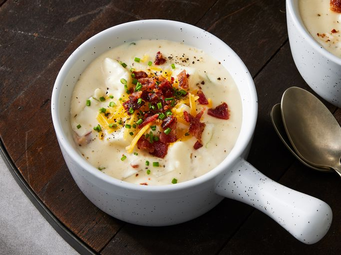

Baked Potato Soup

Description
Baked potato soup is the perfect hearty, filling, stick-to-your-bones dinner for a cold winter's night. This baked potato soup recipe will quickly become a family favorite.
Ingredients
- Bacon: This baked potato soup starts with bacon cooked in a large skillet.
- Butter: and You can also use margarine.
- Flour and milk: Whisk all-purpose flour and milk into the melted butter for a perfectly thick base.
- Green Onion: Chopped green onions lend bright, bold flavor and color.
- Seasonings: This baked potato soup is simply seasoned with salt and pepper.
- Cheese and sour cream: Shredded Cheddar cheese and sour cream ensure a rich and creamy soup.
Steps
- Boil and drain the manicotti.
- Make the filling and spread sauce in the bottom of a baking dish.
- Stuff the shells and arrange them over the sauce.
- Pour the remaining sauce over the shells and sprinkle with Parmesan.
- Bake the manicotti until bubbly.